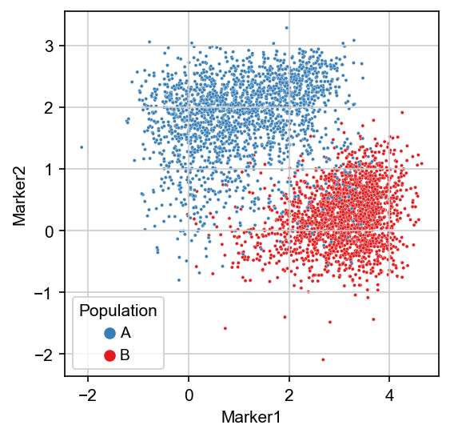

Usage advices
General advices
- Make sure your data only contains the population of interest. E.g., if you are interested into the annotation of immune cells, then consider providing only the live cells that are CD45+. If needed, Scyan can be run to first extract the cells of interest before to annotate the different populations.
- Don't provide overlapping populations in the table. For instance, if you have CD16- NK and CD16+ NK, you don't need to write knowledge about NK cells. Note that, we would actually indirectly annotate NK cells, because they are the union of CD16- NK cells and CD16+ NK cells. You could also provide a hierarchical description of the populations.
- Before to run batch effect correction, check if you really have a significant batch effect (else, you could simply run Scyan without batch-effect correction). You can check that by plotting the batch observation on the umap (see scyan.plot.umap) and see if the different batches overlap or not.
Advice for the creation of the table
Some table examples can be found here.
Important
The design of the knowledge table is essential for the annotations. The literature can help its creation, but we also provide some advice to enhance the table.
- Check that all markers are working as intended. A marker that didn't work during the cytometer acquisition should be removed from the knowledge table, as it can mislead the model.
- It is better to provide no knowledge than false information; therefore, the user should feel comfortable using "Not Applicable" for a marker when unsure (depending on your table, 70% of NA can be acceptable). Besides, if needed, population discovery can be used to go deeper into this marker afterwards.
- When possible, provide at least one negative population and one positive population for each marker. For instance, if you provide only "NA" values and "1", then the model has no reference to understanding what is negative and what is positive (even though it should not cause any severe issue in most cases).
Note
However, you can create a column full of NA for a marker that you want to appear in the latent space. It will not be helpful for the annotations, but it can help the population discovery. You can also remove the marker from the knowledge table if you consider it unimportant for the annotation.
- Sometimes, you will have a marker that is expressed by most of the population \(A\) cells, but you know a few cells from the same population may not express this marker. In that case, we still advise adding the marker on the table, and Scyan will be able to catch these exceptions, as they look like population \(A\) cells for most of the other markers of the panel. Consider the image below: let's say this is the manual gating that you did traditionally. Even though some cells of \(A\) are
Marker1+, you should still write that the population \(A\) isMarker1-, to make a clear distinction with the population \(B\). Also, if you are specifically interested in the cells from \(A\) that areMarker1+, you can still create another population \(A_2\) and write that \(A_2\) isMarker1+while \(A\) isMarker1-.

- Note that the model interprets NA values as "any expression is possible". Thus, a population described with extensive use of NA values (e.g., above 90% of markers, with no discriminative marker provided) can be over-predicted. This is a normal behaviour since few constraints are applied to this population.
- We enable the usage of intermediate expressions such as "mid" and "low" in the table. For that, choose a value between -1 and 1: for instance, 0 for mid, or -0.5 for low. Yet, we advise using it only to differentiate two similar populations. Overusing these intermediate expressions in the table will challenge you to create the table properly while not improving the results.
What should I do if Scyan seems wrong?
- First thing to do is to check your table again. You may have made a typo that could confuse the model. Typically, if you have written
Marker+for a population that isMarker-(or the opposite), it can perturb the prediction toward this population and toward other populations. - Try providing
prior_std=0.35to thescyan.Scyanmodel. Maybe this parameter was too low. Advises to better choose the parameters can be found here. - If one population annotation seems not consistent, or if a group of cells has not been predicted, you can try to target it with
scyan.tools.PolygonGatingUMAP. Then, usescyan.plot.pop_expressions(model, True, key="scyan_selected")to explore the expressions of this population. Another interesting graph isscyan.plot.probs_per_marker(model, True, key="scyan_selected"): look for markers that show up dark on the heatmap, it may guide you to find some errors in the knowledge table. Combine it with a UMAP plot or with a scatter plot to make sure it seems correct, and then read some literature again / update your table. - One reason for not predicting a population may be an unbalanced knowledge quantity between two related populations. For instance, having 10 values inside the table for
CD4 T CMcells versus 5 values forCD4 T EMcells will probably make the model predict very fewCD4 T CMcells. Indeed,CD4 T CMhas many constraints compared toCD4 T EM, which becomes the "easy prediction" (indeed, very few constraints are applied to this population). In that case, read the advice related to the scatter plot above again.
Example about how Scyan handles NA
If a population \(A\) is labeled CD25+, then a cell that is CD25+ provides more confidence to the model towards this population than for a population \(B\) for which CD25 is labeled "NA". Yet, if a cell is CD25-, then it will provide more confidence to the population \(B\) than for the population \(A\). Indeed, CD25- is strong evidence that the cell is not \(A\), while it does not penalizes the population \(B\) too much.
If you still can't make it work
You can create an issue on Github or ask for help (quentin.blampey@gmail.com)